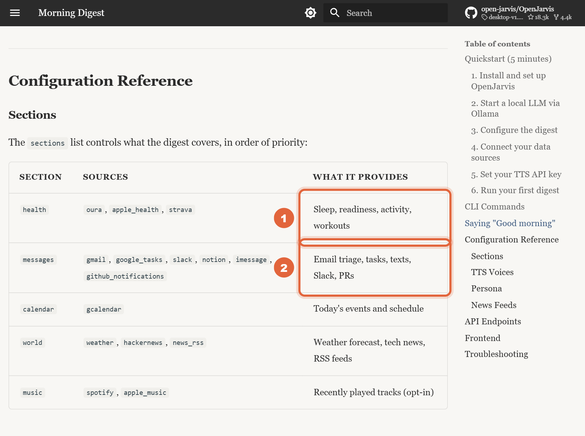
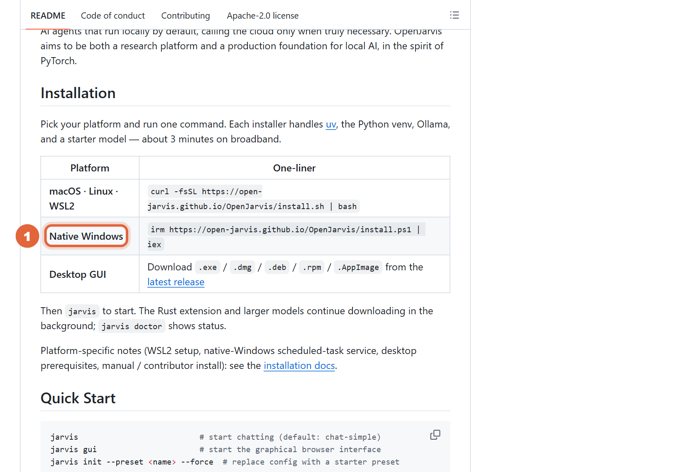
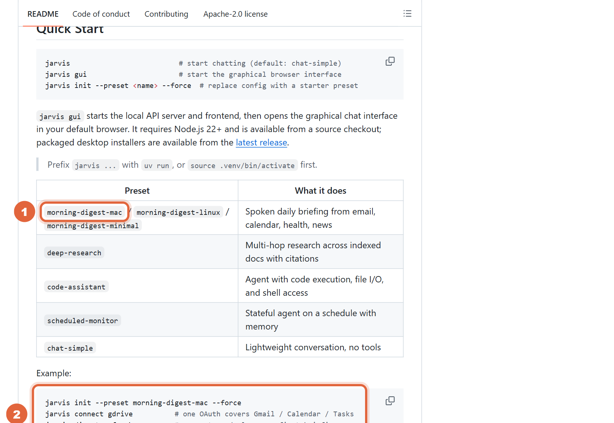
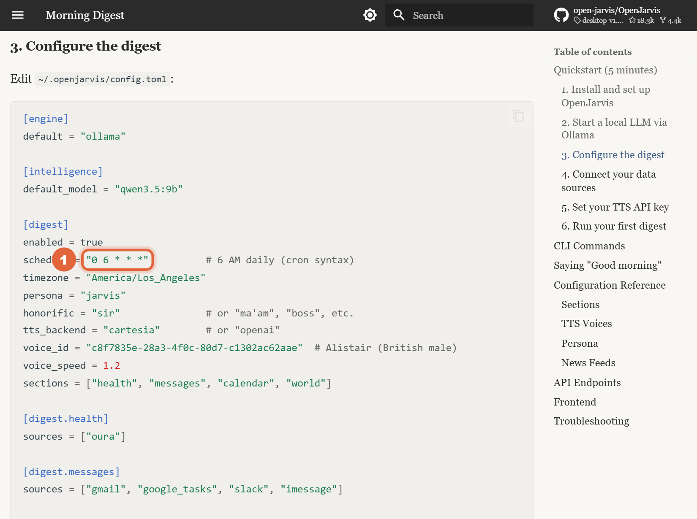
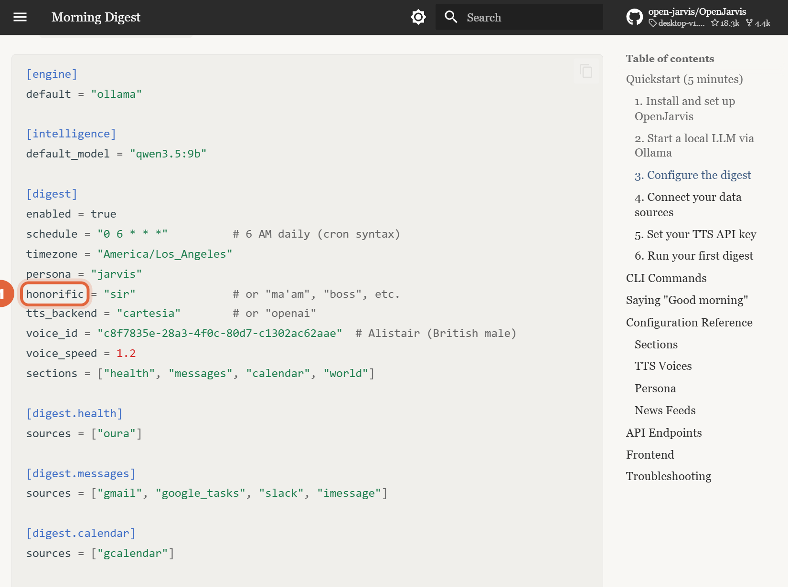

공식 설치 문서 기준으로 정리했어요. 스탠퍼드 연구팀이 만든 오픈소스(Apache-2.0) 개인 AI예요. 지메일·캘린더·할 일·날씨·뉴스(건강 기록은 선택)를 모아 급한 것부터 정리하고, 정해 둔 시각에 목소리로 읽어 줘요. 메일을 읽고 고르는 AI(언어 모델)는 기본으로 내 컴퓨터 안(올라마)에서 돌아요.

윈도는 PowerShell을 열고 'irm https://open-jarvis.github.io/OpenJarvis/install.ps1 | iex'를 붙여 넣어요(1). 맥·리눅스는 그 위 curl 한 줄. 설치기가 파이썬 환경·올라마·기본 모델까지 깔아 줘요(빠른 인터넷 기준 약 3분). 명령이 싫으면 'Desktop GUI' 줄의 설치 파일(.exe·.dmg)로도 돼요.

'jarvis init --preset morning-digest-minimal --force'로 아침 브리핑 설정을 깔아요(맥은 morning-digest-mac — 아이폰 건강·아이메시지까지)(1). 그다음 'jarvis connect gdrive' — 구글 로그인 한 번으로 지메일·캘린더·할 일이 같이 붙어요(2).

Cartesia(추천) 또는 OpenAI API 키를 환경 변수(CARTESIA_API_KEY)에 넣고 'jarvis digest --fresh'를 치면 첫 브리핑을 만들어 글로 보여 주고 소리로 읽어요. 키가 없으면 'jarvis digest --fresh --text-only'로 글만 받아요. 윈도에서 소리가 안 나면 'pip install "openjarvis[speech]"'.
'jarvis digest --schedule "0 6 * * *"'이면 매일 아침 6시예요(1). 앞 숫자가 분, 다음이 시라서 7시 반이면 "30 7 * * *". 끄려면 '--schedule off'. 그 시각엔 컴퓨터가 켜져 있어야 해요.

설정 파일 ~/.openjarvis/config.toml의 honorific(1)을 "sir"에서 "boss"·"ma'am"처럼 바꾸면 그렇게 불러요. persona = "jarvis"는 급한 것부터, 건강은 숫자 대신 흐름으로 말하는 기본 말투예요. sections 순서를 바꾸면 브리핑 순서도 바뀌어요.

처음 한 번(PowerShell)
irm https://open-jarvis.github.io/OpenJarvis/install.ps1 | iex
설치 직후
jarvis init --preset morning-digest-minimal --force jarvis connect gdrive
목소리 키 없이 먼저 볼 때
jarvis digest --fresh --text-only
예약 걸 때
jarvis digest --schedule "30 7 * * *"
도움이 되셨다면
@ai.antenna.kr
에서 바로 쓰는 AI 활용법을 계속 올립니다.